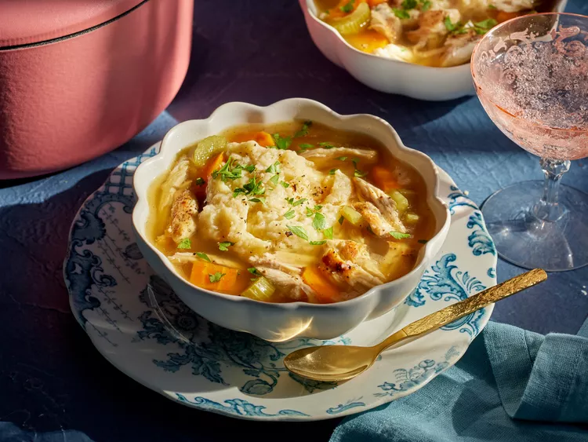

Rustic Chicken and Dumplin's
Rachel Parton George makes this rustic chicken dish for her sister, Dolly Parton, every year on her birthday.
Ingredients
- 1 whole chicken, cut into pieces (drumsticks, thighs, and halved breasts)
- 1 teaspoon Morton Nature’s Seasons seasoning blend
- 3 tablespoons butter
- 1 (32 ounce) carton low-sodium chicken broth
- 2 cups water
- 1/2 onion, minced
- 1 teaspoon poultry seasoning
- 1 teaspoon minced garlic
- 1 1/2 teaspoons salt
- 1 teaspoon black pepper
- 3 medium carrots, cut into 1-inch pieces (1 1/2 cups)
- 3 medium stalks celery, cut into 1-inch pieces (1 1/2 cups)
- 1 1/4 cups flour, plus more for dusting
- 1 teaspoon baking powder
- 1 egg
- 1/2 cup whole buttermilk, well shaken
- 1/2 cup butter, chilled and cut into thin slices
- Chopped fresh parsley, for garnish
Directions
- Season chicken pieces all over with the Morton’s seasoning blend.
- Melt 3 tablespoons butter in a large Dutch oven over medium-high heat. Add chicken pieces, skin sides down, and cook until golden brown, 6 to 8 minutes. Turn chicken pieces and brown again, 6 to 8 minutes more.
- Add broth and water; bring to a boil over high heat. Add onion, poultry seasoning, garlic, 1 teaspoon salt, and pepper. Reduce heat and simmer, covered, 20 minutes. Add carrots and celery. Leaving pot partially covered, continue simmering over low heat until vegetables are almost tender, about 20 minutes.
- Meanwhile, sift flour, baking powder, and remaining 1/2 teaspoon salt together in a large bowl. In a separate medium bowl, whisk together egg and buttermilk.
- Cut chilled butter into dry mixture using a pastry cutter or two forks. Blend well to a crumbly consistency. Add buttermilk mixture and gently stir with a wooden spoon until combined. Cover with plastic wrap and refrigerate 30 minutes.
- Turn out dough onto a floured surface. Using your hands, pat dough to approximately 1-inch thickness and gently fold outer edges into center. Continue to gently fold—do not knead—until it comes together. Pat dough out again to approximately 1-inch thickness.
- Remove cooked chicken from Dutch oven (an instant-read thermometer inserted into thickest part of chicken should register 170 degrees F /76 degrees C) and put it on a plate. Cover with foil to keep warm. Skim fat from broth. Bring broth to a gentle boil over medium-high heat.
- Using a knife, cut dough into 9 (2x2-inch) squares. Gently drop each square, one at a time, into boiling broth. Lower heat to medium and simmer, uncovered, until all dumplings rise to top and a toothpick inserted in center comes out clean, about 10 minutes. Return chicken to pot and simmer an additional 5 minutes.
- Spoon chicken and dumplin’s into bowls. Garnish with parsley.